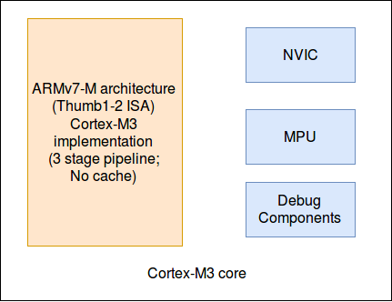

Introduction
The micro-architecture is a processor, the MCU core, that implements an specific architecture. It may also add some other features and components, such as an interrupt controller, a memory protecture unit (MPU), external bus interfaces.
For example, the Cortex-M3 processor (STM32F10x core) implements the on ARMv7-M architecture. Based on ARMv7-M, it defines #pipeline, . Moreover, it also has a nested vectored interrupt controller (NVIC), a MPU, a couple of bus interface.
